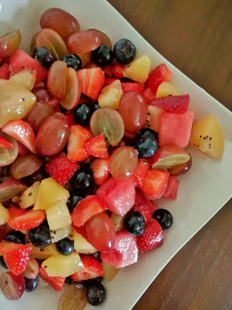

Home
Mojito Fruit Salad Recipe

Description
A recipe for fresh, punchy mojito fruit salads that burst with flavor.
Ingredients
- 1 cup cubed seeded watermelon
- 1 cup seedless grapes
- 1 cup cubed cantaloupe
- 1 cup hulled and quartered strawberries
- 1 cup peeled and quartered kiwi
- 1 cup fresh blueberries
- 3 tablespoons fresh lime juice
- 2 teaspoons white sugar
- 3 sprigs fresh mint
Steps
- Combine watermelon, grapes, cantaloupe, strawberries, and
kiwi in a large bowl with a tight-fitting lid; top with blueberries.
- Combine lime juice, sugar, and mint in a small bowl, crushing
mint with the back of a spoon to extract flavors; pour over fruit
mixture. Seal the bowl with the lid. Refrigerate for at least 1 hour.
- Gently flip sealed bowl several times to coat fruit with lime juice
mixture just before serving.